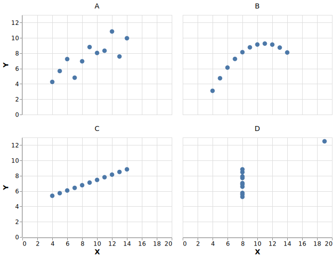

What is Data Visualization?
Transcript: At its core, data visualization is about representing numbers with graphical elements such as the position of a line, the length of a bar, or the colour of a point. We often use visualizations to explore data ourselves, and to effectively communicate our insights to others, as we will learn in later modules of this course.
What is the purpose of visualizing data?
Visualizing data can be used to
- Answer a specific question
- Explore data more generally to generate new questions
To create an effective visualization, start by
- Looking at the data
- Thinking about what you want to achieve by making the visualization
- Drawing it out with pen and paper
Transcript: We often visualize data in order to help us answer a specific question we have about our dataset, but it can also help us generate new questions.
Before creating a visualization, it is important that you think about why you are making it, and what you want to achieve from creating this plot.
Is there a specific question you are trying to answer, like comparing the relationship between two dataframe columns? Or are you creating a plot to help you understand the structure of your data more in general, such as plotting the distribution of each dataframe column?
In either case, it can be extremely helpful to draw out your plot with pen and paper first. This helps you think about if the plot you are creating makes sense or if there is another plot better suited for the task at hand.
Drawing with pen and paper also makes it easier to write the code afterwards, since you clearly know what you are expecting the visualization to look like.
Why bother visualizing data instead of showing raw numbers?
Can you see any differences in the general trends of these four sets of numbers?
| A | |
|---|---|
| X | Y |
| 10 | 8.04 |
| 8 | 6.95 |
| 13 | 7.58 |
| 9 | 8.81 |
| 11 | 8.33 |
| 14 | 9.96 |
| 6 | 7.24 |
| 4 | 4.26 |
| 12 | 10.84 |
| 7 | 4.81 |
| 5 | 5.68 |
| B | |
|---|---|
| X | Y |
| 10 | 9.14 |
| 8 | 8.14 |
| 13 | 8.74 |
| 9 | 8.77 |
| 11 | 9.26 |
| 14 | 8.10 |
| 6 | 6.13 |
| 4 | 3.10 |
| 12 | 9.13 |
| 7 | 7.26 |
| 5 | 4.74 |
| C | |
|---|---|
| X | Y |
| 10 | 7.46 |
| 8 | 6.77 |
| 13 | 8.50 |
| 9 | 7.11 |
| 11 | 7.81 |
| 14 | 8.84 |
| 6 | 6.08 |
| 4 | 5.39 |
| 12 | 8.15 |
| 7 | 6.42 |
| 5 | 5.73 |
| D | |
|---|---|
| X | Y |
| 8 | 6.58 |
| 8 | 5.76 |
| 8 | 7.71 |
| 8 | 8.84 |
| 8 | 8.47 |
| 8 | 7.04 |
| 8 | 5.25 |
| 19 | 12.50 |
| 8 | 5.56 |
| 8 | 7.91 |
| 8 | 6.89 |
Transcript: Why do we need visualizations to help answer our questions?
Is it not enough to look at numbers in tables?
To understand why visualizations are so powerful, it is helpful to remember that to answer a question, we often have to put the data in a format that is easy for us humans to interpret.
Because our number systems have only been around for about 5,000 years, we need to assert effort and train ourselves to recognize numerical data.
Visual systems, on the other hand, have undergone refining during 500,000,000 years of evolution, so we can instinctively recognize visual properties such as colours and distances.
Practically, this means that we can arrive at correct conclusions faster from studying visual rather than numerical representations of the same data.
For example, have a look at the four sets of numbers in the table on the slide. Can you see the differences in the general trends between these four sets of numbers? This is a slightly modified version of the original, which was put together by statistician Francis Anscombe in the 70s.
Although summary statistics are often useful, they don’t tell the whole story
C is the only set with a different mean and standard deviation
| A | ||
|---|---|---|
| X | Y | |
| mean | 9.00 | 7.50 |
| std | 3.32 | 2.03 |
| B | ||
|---|---|---|
| X | Y | |
| mean | 9.00 | 7.50 |
| std | 3.32 | 2.03 |
| C | ||
|---|---|---|
| X | Y | |
| mean | 9.00 | 7.11 |
| std | 3.32 | 1.15 |
| D | ||
|---|---|---|
| X | Y | |
| mean | 9.00 | 7.50 |
| std | 3.32 | 2.03 |
Transcript: Summaries, such as the mean and standard deviation, are helpful statistical tools that are often useful for detecting the differences between datasets.
However, since they collapse the data into just a few numbers, statistical summaries can’t tell the whole story about the data and there can be important differences between datasets that summaries fail to reveal.
Here, the mean and standard deviation indicate that set C is slightly different from the other sets of data in terms of the centre of the sample distribution and the spread of that distribution, while the remaining three sets of data have a similar centre and spread.
Plotting the data immediately reveals patterns in the data
We could not detect these patterns from only looking at the raw numbers or summary statistics

Transcript: Humans are not good at detecting patterns in raw numbers, and we don’t have good intuition about how different distributions of data can contribute to identical statistical summaries.
But guess what we excel at? Detecting visual patterns!
It is immediately clear to us how these sets of numbers differ once they are shown as graphical elements instead of textual objects.
This is one of the main reasons why data visualization is such a powerful tool for data exploration and communication.
In our example here, we would come to widely different conclusions about the behaviour of the data for the four different data sets.
Sets A and C are roughly linearly increasing at similar rates, whereas set B reaches a plateau and starts to drop, and set D has a constant X-value for all numbers except one big outlier.
More examples of plotting versus statistical summaries

Source: Matejka and Fitzmaurice, 2017
Transcript: A more recent and dynamic illustration of how graphical representations are much easier for us to interpret compared to statistical summaries, is the Datasaurus GIF from Autodesk’s research team in this slide.
It displays several different datasets, all with the same mean, standard deviation and correlation between X and Y, but looking at the data graphically shows us how different these datasets actually are.